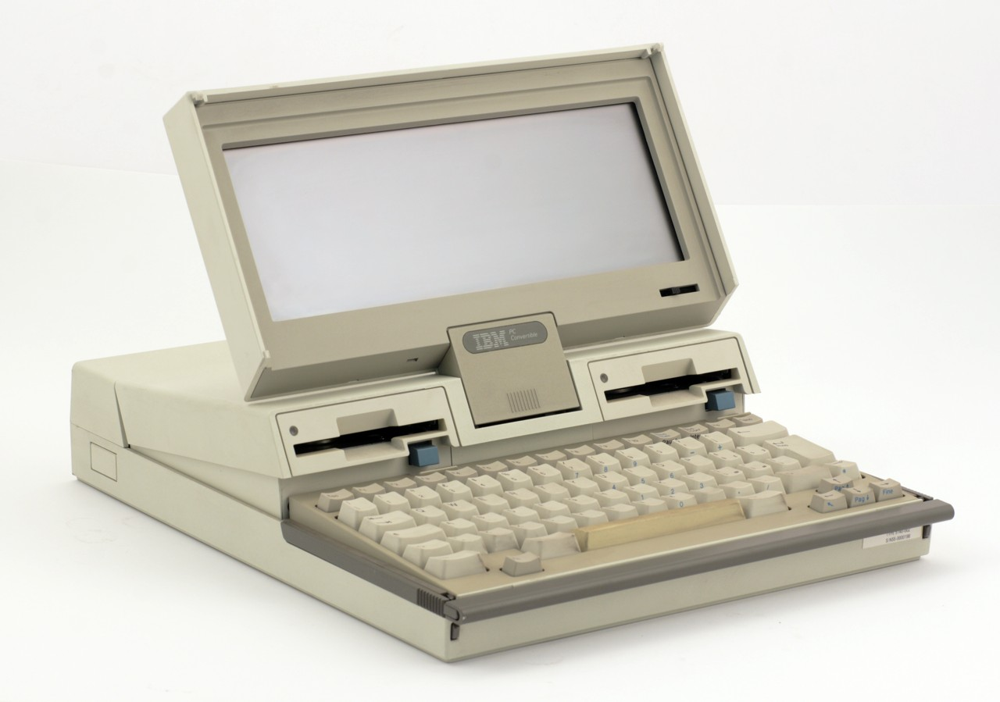

Laptop, seperti yang kita kenal sekarang, adalah produk dari perkembangan teknologi komputer yang telah berlangsung selama beberapa dekade. Ini adalah perangkat komputer portabel yang dirancang untuk kemudahan penggunaan dan mobilitas. Berikut adalah sejarah singkat tentang asal muasal laptop:
Awal Perkembangan Komputer Portabel:
Perkembangan komputer portabel dimulai pada tahun 1970-an. Pada saat itu, perusahaan seperti IBM dan Epson mulai memproduksi komputer yang lebih kecil dan lebih ringan dibandingkan dengan komputer utama atau "mainframe." Meskipun komputer-komputer ini masih jauh lebih besar daripada laptop modern, mereka merupakan langkah awal dalam pengembangan teknologi komputer portabel.
 Gambar Berikut adalah sebuah laptop yang ada pada awal perkembangan komputer portabel.Era Laptop Modern:
Sejak pertengahan hingga akhir 1990-an, laptop semakin populer dan terjangkau. Perkembangan teknologi semikonduktor memungkinkan pembuatan laptop yang lebih kecil, lebih ringan, dan lebih kuat. Selama dua dekade berikutnya, laptop menjadi semakin umum di tempat kerja, pendidikan, dan rumah tangga.
 Gambar Berikut adalah sebuah laptop yang sudah memasuki era laptop modern.
Gambar Berikut adalah sebuah laptop yang sudah memasuki era laptop modern.
Perkembangan Terbaru:
Laptop modern telah mengalami sejumlah perubahan signifikan dalam hal desain, kinerja, dan portabilitas. Ini mencakup pergeseran ke SSD (Solid-State Drive) untuk penyimpanan, peningkatan dalam daya komputasi, penurunan ukuran dan berat, serta layar sentuh dan konsep 2-in-1 yang dapat berfungsi sebagai tablet.
 Gambar Berikut adalah sebuah laptop yang ada dimasa masa sekarang.
Gambar Berikut adalah sebuah laptop yang ada dimasa masa sekarang.
Jadi, laptop adalah produk evolusi dalam dunia komputasi yang telah mengalami perubahan signifikan selama beberapa dekade terakhir. Dalam perjalanannya, laptop telah menjadi salah satu alat komputasi yang paling penting dan umum digunakan di berbagai sektor kehidupan modern.